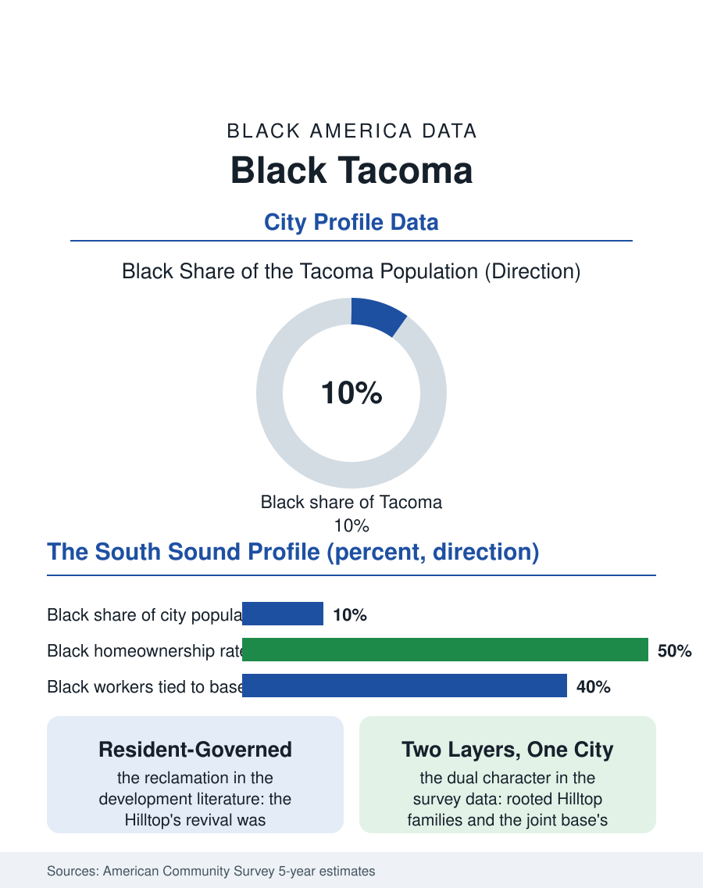

Black Cities
The Hilltop: Black Tacoma
The Hilltop's resident-led reclamation and the joint base's steady stream make Tacoma the South Sound's Black anchor at ten percent. The Tacoma file.

Tacoma's Black community, roughly twenty-two thousand people in a city of about two hundred twenty thousand, around ten percent, is the South Sound's center of Black life, a port and timber city community whose Hilltop neighborhood became nationally emblematic of both the crack era's devastation and a resident-led reclamation. Joint Base Lewis-McChord, one of the nation's largest military installations, anchors the modern population. The census counts a community with deep roots and a hard century. This article reads the Tacoma file.
The Hilltop and the Port
Tacoma's Black settlement follows the Northern Pacific's terminus and the working waterfront, consolidating in the Hilltop, the neighborhood above the port whose name the whole region knows. The community built the classic institutions there, churches, the businesses of K Street, a political organization inside a company-town economy, while the timber and shipping industries employed Black workers in their thousands through the mid-century. The post-industrial decades hit the Hilltop with the full sequence this atlas records in its hardest chapters: the mills and the port's labor demand thinned, disinvestment followed, and the crack era's violence made the Hilltop's name a national shorthand in the early 1990s, answered by one of the era's most cited community reclamations, residents, churches, and the police department's own community policing experiment reclaiming blocks house by house. The military century compounded underneath: Fort Lewis and McChord Field, merged into the joint base, delivered the federal stream, and the Tacoma area's Black population acquired its modern dual character, the rooted Hilltop families and the military families cycling through the subdivisions of the county, many of whom stay, the retiree conversion rate being the base's demographic signature across the atlas.
The Numbers in Pierce County
The American Community Survey profile reflects both layers. Median Black household income runs below the metro median but is stabilized by the military and port economies; homeownership runs in the middle of the atlas's range, with the Hilltop's housing, repriced by Tacoma's growth and Seattle's overflow, now the gentrification frontier of the South Sound, its longtime owners holding appreciated ground and its renters facing the coast's arithmetic. Employment concentrates in the joint base and its contractors, the hospital systems, the port and logistics economy, and Tacoma Public Schools, and educational attainment climbs through the University of Washington Tacoma's urban campus, whose Black enrollment and community mission are explicit in its founding documents. The population count grows with the region, Black Tacoma spreading into Lakewood, the purpose-built suburb beside the base whose diversity the census records as the metro's most international, and into the county's new subdivisions. The health file carries the port's industrial legacy and the military community's own profile, while the political file shows a community at governing scale, Black representation across the city council, the school board, and the port commission in the modern era, culminating in the mayor's office in the recent record.
Reclamation as Method
The Hilltop's second act is the file's exportable lesson, and its terms are precise in the community development literature: the reclamation worked because it was resident-governed, the safety campaign and the housing reinvestment that followed were designed with the neighborhood's institutions at the table as principals rather than consulted as decoration, so that the revival's gains, the commercial corridor's return, the new housing, the arts district forming in the old K Street corridor, accrued substantially to the community that survived the bad years rather than replacing it. That last clause is now the contested frontier, as Tacoma's growth makes the Hilltop's ground valuable to the region and the land trusts and affordability covenants built during the lean years are tested by prices nobody in the reclamation era imagined. The community's institutions, the churches, the Black collective and cultural organizations, the alumni of its high schools, operate the file with a sophistication the hard century purchased. Tacoma's Black population, a tenth of the city and the South Sound's anchor, closes its file with the port cranes on the horizon and the Hilltop's porches above them, a neighborhood that became a verb in the community development literature. Reclaim is what its residents did. The census counts twenty-two thousand people entitled to the credit. The county's counts in the next survey cycle will measure the ground the porches command.
More in Black Cities
Black Atlanta: Population, Distribution, and Growth of a Black Metropolis
Metro Atlanta holds more than two million Black residents — roughly one in three, second only to New York. The suburban distribution, migration history, and composition of Black Atlanta in the census data.
Black New York: The Largest Black Population in America
The New York metropolitan area holds about 3.4 million Black residents — more than any metro in the nation — and the city itself about two million. The census profile.
Black Washington: The District and the Metro
The Washington metro holds about 1.6 million Black residents, and the District itself — long a majority-Black city — now records a Black share near 41 percent. The census profile.
Source: U.S. Census Bureau, American Community Survey 5-year estimates for Tacoma, WA; Pierce County historical records.